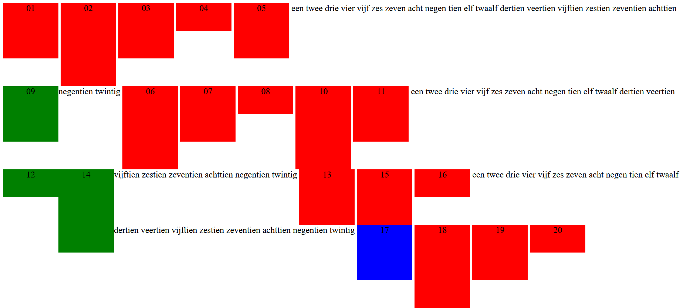

opdracht 1
- voor block en inline-block worden de opgegeven width en height toegepast
- alles die letters bevat zijn woorden.
opdracht 2
door gebruik te maken inline block worden de margins gerespecteerd
opdracht 3
- omdat er in de css code geschreven staat dat voor alle div's text-align:center; wordt toegepast
- omdat er geen lijn hoogte is meegegeven kan hij ook niet het midden bepalen
- de tekst wordt op dezelfde hoogte gezet
- stel de line-height in en gebruik dan vertical-align:center;
- je stelt de display in als een table-cell waardoor hij gaat werken als een cel in een tabel dan kan je hem centreren met vertical-align:center;
- tall krijgt voorrang omdat hij omdat hij onder area staat in de css code
opdracht 4

opdracht 5
/